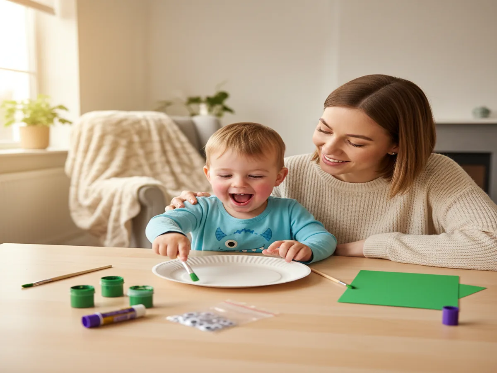
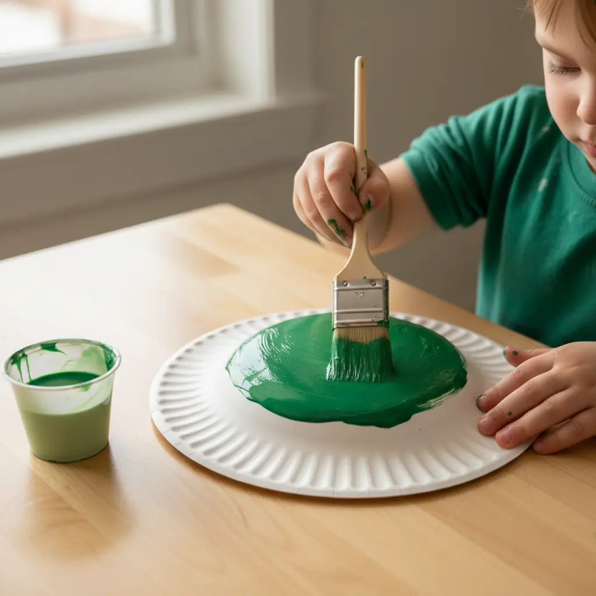
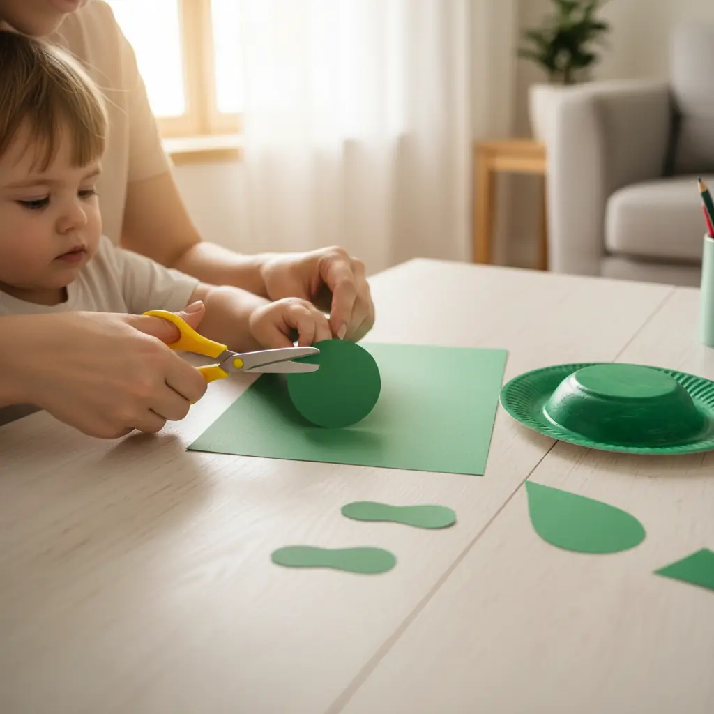
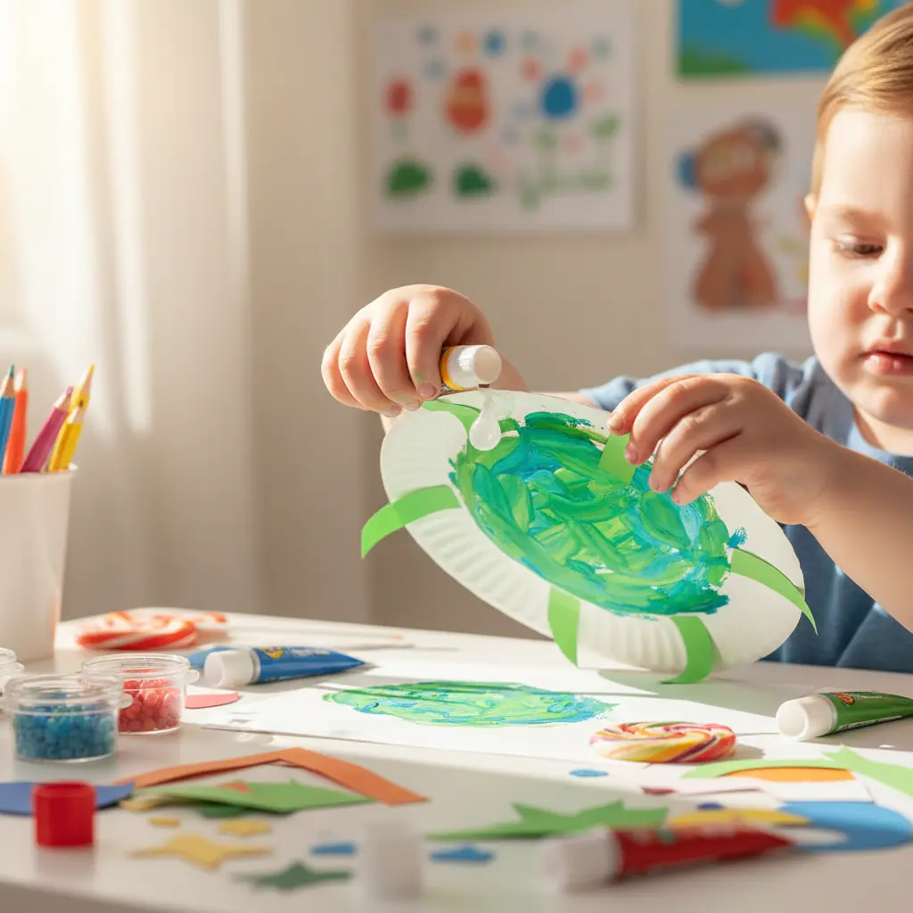
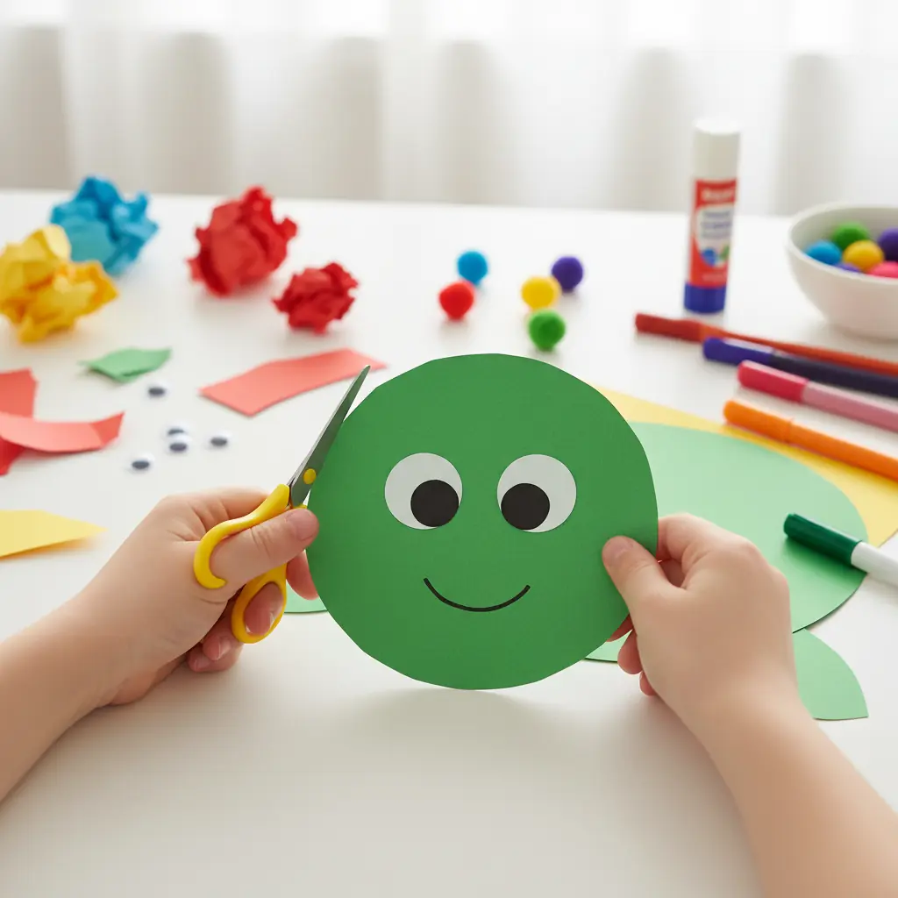
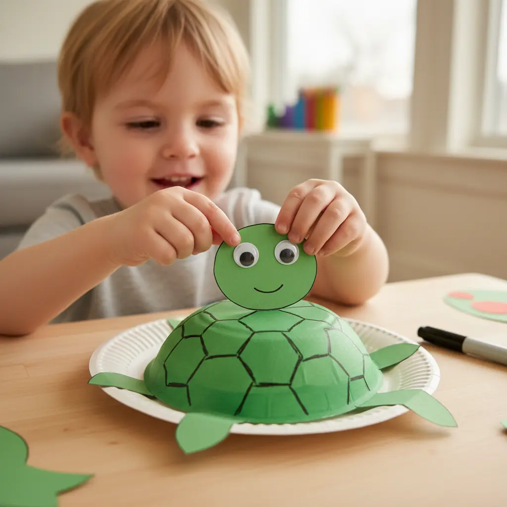

If your little one is obsessed with turtles right now (or really any animal that moves slowly and carries its house on its back, relatable, right?), you're going to love today's project. This easy paper plate turtle craft for preschoolers is one of our all-time favorites because it's simple enough for tiny hands, adorable enough to display on the fridge, and it comes together in about 15 minutes. Grab your paint, round up a paper plate or two, and let's get crafty!
Why Kids Love This Craft
There's something magical about turning a plain paper plate into a cute little turtle, and kids feel like absolute artists when they see it come together. This preschool paper plate turtle art project gives children the chance to practice painting, cutting, and gluing, which are all essential fine motor skills they're building at this age.
Plus, turtles are just plain cool. Whether your kiddo learned about them at the zoo, in a storybook, or from a nature documentary, they'll light up when they see their very own turtle taking shape.
What I especially love about this craft is how forgiving it is. There's no "wrong" way to paint a turtle shell, so even the youngest crafters feel successful. It's a wonderful confidence builder, and the open-ended decorating step lets every child's personality shine through. Whether you're doing this as a paper plate turtle craft for toddlers at home or setting it up for a classroom full of preschoolers, it works beautifully every time.

What You'll Need
Here's everything you'll need to make this easy paper plate turtle craft for preschoolers. I like to lay it all out before we start so little hands aren't waiting around while I dig through the craft closet!
- 9-inch paper plate, one per turtle (grab a pack to have extras).
- Washable green tempera paint: one shade works great, two shades look even better.
- Kid-sized round paintbrushes: a medium (#8 or #10) for the shell, a smaller one for details.
- Green cardstock paper, one sheet per turtle, for the head, legs, and tail.
- Self-adhesive googly eyes, 10mm size: 2 per turtle, peel-and-stick.
- Washable glue sticks for attaching the head, legs, and tail.
- Black washable marker for the smile and shell details.
- Child-safe scissors (or pre-cut the pieces for younger toddlers).
- A cup of water for rinsing brushes.
- Newspaper or paper towels to protect your table.
Step-by-Step Instructions
Follow along with this cute paper plate turtle craft step by step. I promise it's as easy as it looks! Each step is preschooler-friendly, and I've included tips along the way for adapting things for younger kiddos.
Step 1: Paint the Turtle Shell
Flip your paper plate upside down so the bottom (the rounded, dome-like side) is facing up, and this becomes your turtle's shell! Have your child paint the entire surface with light green washable tempera paint. Encourage big, sweeping brush strokes to cover the whole plate. Don't worry about it being perfectly even. Turtles in nature have beautifully imperfect shells!
If your child is eager, you can let them add dabs or swirls of dark green paint on top of the light green while it's still wet for a cool blended effect. Set the plate aside and let it dry for about 5–10 minutes. This is a great time to move on to Step 2!

Step 2: Cut Out the Body Parts
While the shell dries, it's time to make the turtle's head, four legs, and a little tail from your green cardstock. For the head, cut an oval shape about 2–3 inches long. For the legs, cut four smaller rounded rectangles (think stubby little paddle shapes, about 1.5 inches each). For the tail, cut a tiny triangle or teardrop shape.
If your preschooler is comfortable with scissors, let them try cutting these shapes. They don't need to be perfect! For younger toddlers or 3-year-olds, I recommend pre-cutting these pieces ahead of time so the craft stays fun and frustration-free. You can even trace the shapes with a pencil first to give your child a cutting guide.

Step 3: Assemble Your Turtle
Now for the exciting part: building the turtle! Turn the painted plate back over so the painted dome side faces up (this is the shell). Using a glue stick, help your child attach the head to the top edge of the plate, tucking it slightly under the rim so it peeks out. Glue two legs on each side of the plate, angling them outward slightly so it looks like your turtle is mid-waddle. Finally, glue the little tail to the bottom edge.
Press everything down firmly and give it a moment to set. Your child will start to see the turtle taking shape, and trust me, the excitement on their face is priceless!

Step 4: Add the Shell Details
Once the green paint is fully dry, grab your black washable marker and let your child draw a shell pattern on the plate. The classic turtle shell look is a series of hexagons (like a honeycomb), but honestly, any pattern works! Circles, squiggly lines, dots, zigzags: it all looks adorable.
For very young kids, you can draw the shell pattern lightly in pencil first and let them trace over it with the marker. Or, skip the marker entirely and let them press fingerprints in dark green paint all over the shell for a fun textured look. This step is where every turtle becomes truly one-of-a-kind!

Step 5: Give Your Turtle a Face
Time to bring your turtle to life! Peel the backing off two self-adhesive googly eyes and let your child stick them onto the oval head shape. Then, using the black marker, draw a sweet little curved smile underneath the eyes. Want to add extra personality?
Draw tiny nostrils, rosy cheeks with a pink crayon, or even little eyebrows. This is always my kids' favorite step because suddenly their turtle has a personality. Name tags are encouraged. Our last turtle was named "Speedy," which I thought was hilariously optimistic. 🐢

Variations to Try
Sea Turtle Version: Turn your craft into a paper plate sea turtle by painting the shell in shades of blue and teal instead of green. Cut the legs into longer flipper shapes (pointed ovals) and use watercolor paint for a beautiful ocean-inspired look. You can even glue the finished sea turtle onto a piece of blue construction paper and add paper seaweed and fish around it for a full underwater scene!
Tissue Paper Mosaic Shell: Skip the paint entirely and let your child tear small pieces of green and yellow tissue paper, then glue them all over the plate in a mosaic pattern. This version is fantastic for building fine motor skills and creates a gorgeous textured shell. It's also less messy than paint, which is a win on busy weekdays.
Alphabet or Number Turtle: Turn this craft into a sneaky learning activity! Write letters or numbers inside the shell pattern hexagons with a marker. You can practice your child's name, work on letter recognition, or even write out a simple sight word. It's a wonderful way to blend art and early literacy without it feeling like "work."
More Crafts You'll Love
If your little one had a blast with this easy paper plate turtle craft for preschoolers, they'll love these other paper plate animal projects we've put together:
Final Thoughts
This easy paper plate turtle craft for preschoolers is one of those projects that hits all the right notes: it's quick, affordable, adorable, and packed with learning opportunities for little ones. Whether you're crafting on a rainy afternoon, prepping for a turtle-themed unit, or just looking for something fun to do together, this one always delivers smiles.
I'd love to see your family's finished turtles! Snap a photo and share it on Pinterest, and if you found this tutorial helpful, pin it so other craft-loving mamas can find it too. Happy crafting, friend! 💚🐢